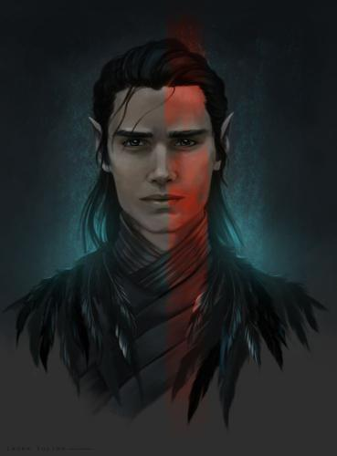
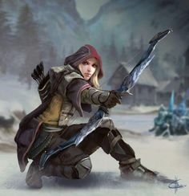
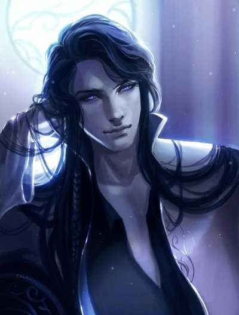
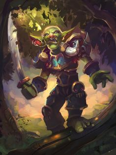
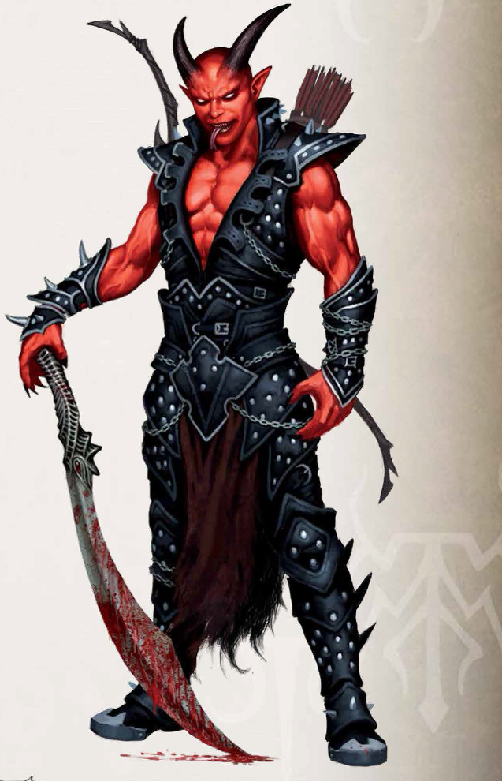
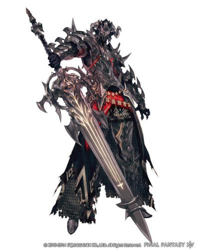
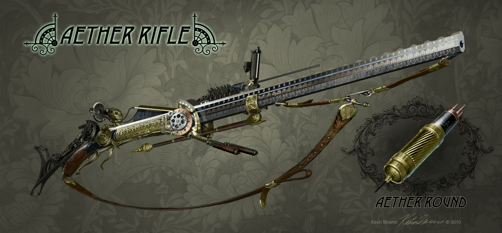
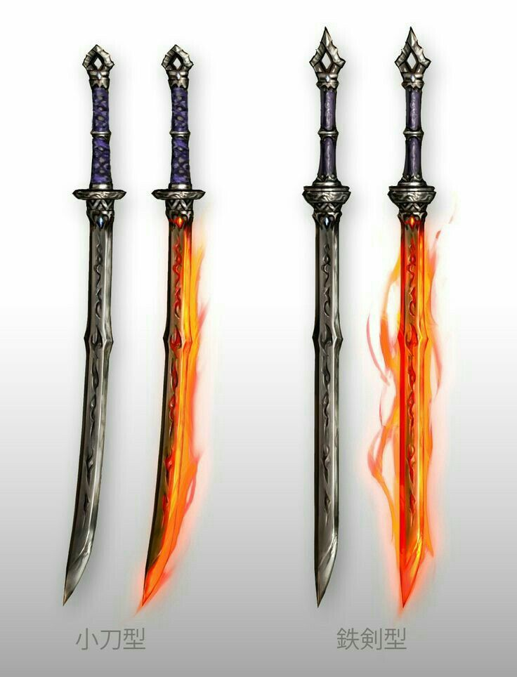
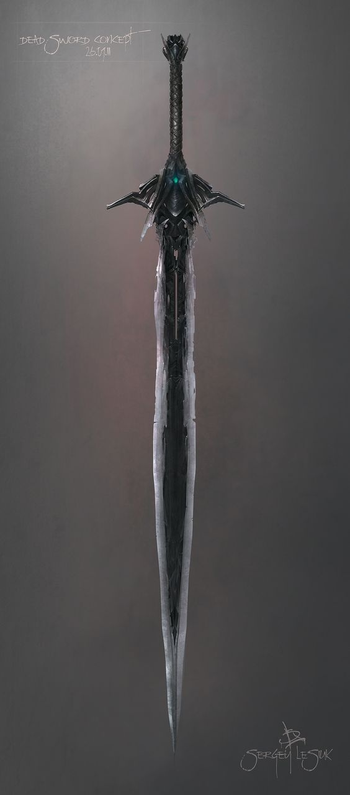

Les héros et leurs classes
Le capitaine Leine

Né d'une mère humaine et d'un père elfe, Leine n'a jamais connu mon père et sa mère
ne voulait pas lui en parler. Il n'a jamais eu beaucoup d'ami dû à sa nature de demi-elf,
méprisé par les humains et inexistant pour les elfes. Il s'est fait un seul ami humain
durant sa jeunesse qui est maintenant son compagnon d'arme. Vers ses 12 ans sa mère est
décédée suite à une épidémie. Plutôt que de finir dans la rue il s'engagé dans la marine
avec Edgard qui avait également perdu ses parents durant l'épidémie. Après 10 ans de
service auprès de son capitaine, il y a appris les bases pour devenir capitaine de navire.
De plus vers 15 ans il a voulu combler ses lacunes sur la civilisation elfique. Il a
alors apris tous ce qu'il pouvais apprendre sur les elfes. Un jour qu'il
rentrait de mission, son navire fût abordé par des pirates. Edgar et lui furent fait prisonnier. Après
quelques semaines passées à fond de cale le navire pirate fût pillé par l'armée de Tertio.
Leine, Edgar et tout les survivants de l'abordage furent condamné à se battre
dans l'arène jusqu'à la mort. Il réussit à s'en échapper d'autre compagnon. Son aptitude
à commander lui permit de guider ses compagnons à travers la ville. Ensemble, il volèrent un navire.
Ses compagnons le reconnurent et l'acceptèrent comme capitaine.
La quartier-maitre Antara

Antara est une belle jeune femme de 19 ans. Elle vivait dans un petit
village côtier sur Corlantae avec ses parents. Intrépide et courageuse, elle était passionnée par l'exploration. Un jour qu'elle explorer une ruine, proche de
son village, elle entendit des tirs de canons et vit de flammes s'élever de son village.
Elle rentra en courrant et découvrit avec horreur que des pirates étaient en train de piller
son village. Des corps gisaient sans vie, elle récupéra une arme et commença à se battre contre
les pirates mais fût rapidement assomée. Elle se réveilla dans la cabine du capitaine pirate et
sort étant peu enviable : elle était maintenue en vie pour divertir le capitaine. Ce navire
fût attaqué par Tertio. Elle fût contrainte à se battre dans une arène et y rencontra Leine.
S'échappant ensemble de Tertio, elle devint sa quartier-maitre et une tireuse d'élite hors
de pair.
Le mage Aodren

Le mage Aodren est viel elfe intelligent, déterminé et animé d'une grande curiosité. Cependant,
il n'a aucun souvenir de sa jeunesse. Etant un mage de talent il s'est vite rendu compte que cette
amnésie est due à un sort. Malgré ses connaissances, il n'a jamais pu le briser. Il s'est
mis à arpenter le monde à la recherche de ses origines. Durant un de ces voyages, le bateau
qui le transporter s'est fait attaqué par des pirates. Il se retrouva prisonier à fond de cale.
Le pire dans tout ça : un demi-elfe se trouvait dans son champs de vision. Les pirates qui
le retenait prisionnier furent défait par Tertio. Ces militaires psychorigides ne voulurent
entendre qu'il était juste un prisionnier et qu'il n'avait jamais était un pirate. Comme les
autres il fût condamnés à se battre jusqu'à la mort dans l'arène. C'était inacceptable. Durant
son séjour, il fût malmené par un mage étrange et vraiment puissant. Il se jura de le retrouver.
Suite à un concours de circonstance, il se retrouva à s'échapper de l'arène avec le demi-elfe et
d'autres détenus. Sa priorité étant de survivre, il suivit le demi-elfe et devint un membre de son
équipage. Il le reconnu comme capitaine uniquement par nécessité.
Durant les voyages, il devint adepte d'une ancienne magie oubliée, connue sous le nom de magie des runes
ou encore magie ancestrale. Cette magie lui conféra une grande puissance. Pour finir,
il apprit, de manière fort abrupte, que la capitale des elfes n'existait plus. Il a été désigné
Patriache des elfes par le fontôme du dernier roi elfe. Il est probablement l'un des derniers représentants
de sa race.
Le maitre queue Stogm

Le maitre-queue Stogm est un gobelin particulièrement malin né dans un village au nord de Tertio.
Il peut faire preuve d'une fourberie sans limite en vers ses ennemies tout en montrant
une grande loyauté en vers ses amis. Malgré cela, Stogm est doté d'un très mauvais sens
de l'orientation. Un jour qu'il partait chasser pour ce faire à manger, il s'est
lamentablement perdu dans la forêt. Ce retrouvant seul à des dizaines de kilomètres de
son village, il se fît capturé par une patrouille. Il se retrouva enfermer dans une
arène, condamné à combattre jusqu'à que mort s'en suive. Dans cette arène, il combattit
vaillement avec Antara. Ensemble, ils triomphèrent de leur épreuve. Il fût libéré par
un demi-elfe nommé Leine au moment ou celui-ci s'échappa. Voyant la capacité de ce
demi-elfe à fédéré et mener des inconnus sous commandement, il décida de le suivre.
C'est ainsi qu'il devint maitre-queue d'un équipage dirigé par le capitaine Leine.
Le combattant Darth

Darth est un jeune homme d'extraction noble. Un soir, alors que lui et sa famille sont
invités à une soirée mondaine, un événement inattendue s'est produit. Certains nobles, après
quelques verres, trouvait amusant de se livrer à des séances de spiritisme. Justement, durant
l'une de ces séances, les participants s'était légèrement trompé durant l'incantation. Au lieu
de communiquer avec les esprits, une connexion avec les enfers fût ouverte. Une démone
supérieure particulièrement puissante saisi cette occasion pour se choisir un champion. Cette
démone, du nom d'Asmodée, jeta son dévolu sur Darth. Ainsi, il gagna un héritage démoniaque.
Cependant, cet événement causa un carnage dans la soirée mondaine. Darth fût le seul survivant
retrouvé au milieu d'un carnage sans nom. Comme il ne put dire avec précision ce qu'il s'était
passé, Darth fût condamné à se battre dans l'arène jusqu'à la mort. Il combattit avec un demi-elfe
rompu au maniement des armes. Il triomphèrent ensemble d'un groupe de gladiateurs expérimentés.
Ensemble et avec d'autres compagnons d'armes, il s'échappèrent de l'arène et volèrent un
navire. Depuis lors, il vogue sous les ordres du capitaine Leine. Son héritage démoniaque
lui fît développer un gout pour les combats sanglants et le carnage.
Ces équipements légendaires sont uniques. Ils possèdent une conciensce et
choisissent leur porteur. Cela à pour conséquence directe une symbiose entre
le porteur et la conscience de l'équipement légendaire. Ainsi l'équipement évolue
en même temps que son maître. Pour finir, pour obtenir un tel équipement, le
porteur doit passer des épreuves. Celle-ci sont rassemblées dans un donjon
personnalisé. Le porteur doit obligatoirement le faire seul, aucune aide extérieure
est possible.
Bahamut

Cette armure est d'origine draconique. Le porteur de cette devient un adversaire
notoirement difficile à éliminer.
Bonus de bases :
- Résistance : 150
- RD : 10
- MD: +1
- Volonté: +2
- Dextérité: +2
- Force: +3
- PV: +30
Descriptif des niveaux :
| Niveau 1 (10 exp) |
Résistance physique II |
| Niveau 2 (15 exp) |
Résistance aux altérations |
| Niveau 3 (20 exp) |
Volonté draconique |
| Niveau 4 (25 exp) |
Md +1 |
| Niveau 5 (30 exp) |
Immunité aux dégâts tranchants |
| Niveau 6 (30 exp) |
BBA +2 |
| Niveau 7 (30 exp) |
PV +50 |
| Niveau 8 (30 exp) |
Force +5 |
| Niveau 9 (30 exp) |
Vigueur draconique |
| Niveau 10 (40 exp) |
Je suis éternel |
Descriptif des compétences :
Résistances physique II :
Tout les types de dégats physique sont réduits de 20%. De plus, la PA des
ennemis diminue de 2 lorsque le porteur de l'armure est visé.
Résistance aux altérations :
Lorsque le porteur de l'armure doit subir une altération d'état, il réalise un test
de vigueur. Si le test de vigueur est réussit (DD>15 pour les ennemis normaux et DD>20
pour les ennemis spéciaux) le porteur n'est pas affecté par l'altération. Ce test doit
être réalisé pour chaque altération.
Volonté draconique :
A la mort d'un ennemi, l'armure récupère 50% des points de vie de l'ennemi en résistance.
Si l'armure dispose de tout ces points de résistance, les points de vie récupérés sont
convertit en dégâts lors de la prochaine attaque.
Vigueur draconique :
Les tests de vigueur sont automatiquement réussis. Cela n'affecte pas la compétence de
résistance aux altérations. Si le porteur de l'armure doit réaliser un jet dans la table
des blessures, il ne peut pas recevoir de blessure fatale.
Je suis éternel :
Lorsque les points du porteur descendent à 0, l'armure transfère automatiquement la moitié
de ses points de résistance au porteur. Cette compétence fonctionne aussi dans le sens
inverse. Lorsque la résistance de l'armure descend à 0, le porteur transfère automatiquement
25% de ses points de vie à l'armure.
Maegmir

Cette armure est d'origine draconique. Le porteur de cette devient un adversaire
notoirement difficile à éliminer.
Bonus de bases :
- Tir normal : 1 action complexe
- Dégâts : 1d12 avec une PA de 5
- Marge de critique : 18-20
- Portée : 4 incréments de 25 mètres
- Dextérité : +3
- Volonté : +2
- Touché +2 dans le premier incrément
Munitions :
- Balle normale : 1 lingot de fer + 1 poudre à canon
- Balle élémentaire : 1 balle normale + un enchantement élémentaire
La fabrication des balles nécessite la présence d'un forgeron et d'un
enchanteur sur l'île.
Descriptif des niveaux :
| Niveau 1 (10 exp) |
Visée sure |
| Niveau 2 (15 exp) |
Balle à tête chercheuse |
| Niveau 3 (20 exp) |
PA 7 |
| Niveau 4 (25 exp) |
Marge de critique 17-20 |
| Niveau 5 (30 exp) |
Tir chargé |
| Niveau 6 (30 exp) |
Balle perforante |
| Niveau 7 (30 exp) |
Dégâts : 2d20 |
| Niveau 8 (30 exp) |
Dextérité +5 et volonté +3 |
| Niveau 9 (30 exp) |
Précision mortelle |
| Niveau 10 (40 exp) |
Une balle, un mort |
Descriptif des compétences :
Visée sure :
Réalisation d'un test de dextérité sans bonus. Si le test est réussi le tir touche
automatiquement la cible tant qu'elle est fixe. La difficulté est au choix du MJ.
Tir chargé :
Cette compétence consiste à charger un tir pendant un tour et demi. La balle traverse
tout les ennemis d'une ligne de vue. Les dégâts subis diminuent de 1 par cible traversée
Balle perforante :
Les ennemis n'ont plus aucun endroit où se cacher : les balles traversent les couverts.
Ainsi le défense ne compte plus et il n'y aucun malus aux dégâts.
Précision mortelle :
Cette compétence met deux tours à charger. Elle permet de viser directement le point faible
de l'ennemi (s'il en a un). Ainsi l'ennemi prend les dégâts maximum multiplié par deux
(cumulable avec une réussite critique).
Une balle, un mort :
Lors d'un coup critique deux dés d'actions sont ajoutés gratuitement. Les dés additionnels
peuvent exploser.
Caradhras et Fëalhach

Ces lames sont imprégnés par des énergies démoniaques. Asmodée a aidé à la fabrication
de ces armes.
Bonus de bases :
- Dégâts : 2d10 tranchant et acérée 5
- Marge de critique : 18-20
- Force : +3
- Constitution : +2
- Réflexe : +1
Descriptif des niveaux :
| Niveau 1 (10 exp) |
Aura de douleur |
| Niveau 2 (15 exp) |
Maitrise des arts démoniaques |
| Niveau 3 (20 exp) |
Acérée 10 et PA 5 |
| Niveau 4 (25 exp) |
Marge de critique 17-20 et dé d'action +1 |
| Niveau 5 (30 exp) |
Soif de sang |
| Niveau 6 (30 exp) |
Immunisé aux capacités démoniaques |
| Niveau 7 (30 exp) |
Dégâts : 2d10 +4 |
| Niveau 8 (30 exp) |
Force : +5, Consitituion : +3, PV : +50, +1 dé d'action |
| Niveau 9 (30 exp) |
Le pouvoir de sang |
| Niveau 10 (40 exp) |
La voie du psychomancien |
Descriptif des compétences :
Aura de douleur :
L'héritier démoniaque active une aura d'une cas autours de lui. Toutes créatures présentes
dans cette aura subit 1 points de dégâts par tour, y compris l'héritier. Ces dégâts ne sont
soumis à aucune résistance. Tous les 6 de dégâts reçus de cette manière donnent une attaque
bonus à l'héritier.
Maitrise des arts démoniaques :
Les capicités d'affinité démoniaques augmentent d'un rang.
Soif de sang :
Les de l'aura de douleur sont doublés. De plus tous les 20 dégâts reçus de cette manière,
la défense augmente de 1 de façon temporaire.
La voie du psychomancien :
Tout les 20 points de vie perdus par l'héritier octroient à l'héritier 1 point de dégat
supplémentaire. A chaque fois que l'héritier descend en dessous de 25% de ces points de
vie, la prochaine attaque est nécessairement critique et le dé de dégâts est maximal. Tant
que l'héritier reste dans son premier quart de vie, il peut attaquer 4 fois par tour.
Taer'Log

Ce bracelet en véridium est imprégné d'un esprit puissant et aux grands pouvoirs.
Bonus de bases :
- Intelligence : +3
- Constitution : +3
- PM : +15
- Incantation : +5
Descriptif des niveaux :
| Niveau 1 (10 exp) |
Maitrise de l'ancienne magie |
| Niveau 2 (15 exp) |
Second souffle |
| Niveau 3 (20 exp) |
Résisistance physique II |
| Niveau 4 (25 exp) |
Dégâts élémentaires diminués de 20% |
| Niveau 5 (30 exp) |
Les temps d'incantations sont limités à 1d6 |
| Niveau 6 (30 exp) |
Magie divine |
| Niveau 7 (30 exp) |
Immunité à tous les sorts de contrôle |
| Niveau 8 (30 exp) |
Tacticien |
| Niveau 9 (30 exp) |
Le savoir c'est le pouvoir |
| Niveau 10 (40 exp) |
Patriarche |
Descriptif des compétences :
Maitrise de la magie :
Les effets des sorts de l'ancienne magie sont doublés.
Second souffle :
Lorsque le porteur a ses points de vie qui descendent à 0, il regagne instantanemment
tous ses points de vie.
Magie divine :
Les dégâts des sorts de l'ancienne magie font 1d100+19. Si le DD de puissance est égal
à 20, les dégâts passent à 2d100+19.
Tacticien :
Lors d'un réussite critique sur un test d'incantation le lanceur à le choix. Soit il annule
le temps d'incantation, soit il fait les dégâts max multiplié par 2.
Le savoir c'est le pouvoir :
La magie n'a plus aucun secret. L'utilisateur peut apprendre les sorts de toutes les
écoles de magie et gagne deux dons en magie. Le coup des sorts est annulé pour les
sorts de niveau 4 et inférieur.
Patriarche :
Les sorts de niveau 5 et inférieur faisant des dégats font systématiquement les dégâts
maximum. Le temps d'incatation des sorts de niveau 7 ou moins passe à une demi-action. De
plus l'affinité du patriarche avec ceux du passé est maximale : le lanceur de sort peut lancer
4 sorts de niveau 7 et inférieur dans le même tour.
A distance et Sur place
Ces dagues sont indéniablement très anciennes. Elles ont été fabriquées
dans un minerai très sombre appelé le tenebrium. Ces dagues confèrent de grands
pouvoirs à son porteur.
Bonus de bases :
- Condition : classe Assassin
- Dégats : 2d8 ensanglanté et PA 5
- Marge de critique : 18-20
- Dextérité : +3
- Force : +2
- Volonté : +2
Descriptif des niveaux :
| Niveau 1 (10 exp) |
Frappe critique |
| Niveau 2 (15 exp) |
Acrobatie mortelle |
| Niveau 3 (20 exp) |
PA 7 |
| Niveau 4 (25 exp) |
Marge de critique 17-20 |
| Niveau 5 (30 exp) |
Voici ma cible |
| Niveau 6 (30 exp) |
Réflexe +2 |
| Niveau 7 (30 exp) |
Dégats 2d12 |
| Niveau 8 (30 exp) |
Dextérité +5, Volonté +3 |
| Niveau 9 (30 exp) |
Plus d'un tour dans mon sac |
| Niveau 10 (40 exp) |
Ombre mortelle |
Descriptif des compétences :
Frappe critique :
Lorsque l'adversaire est pris au dépourvu, l'attaque est automatiquement un
critique.
Acrobatie mortelle :
Les tests d'acrobatie sont automatiquement réussit, sauf échec critique.
Voici ma cible :
Cette compétence ne s'applique que sur une cible qui ne voit et n'entend pas
l'assassin. Il peut lancer une de ses dagues (attaque à distance) sur la cible
et réaliser un test de volonté pour se téléporter au niveau de sa dague. Ensuite,
il peut réaliser un test de dextérité pour infligé un coup mortelle avec le seconde
dague. Si le test de réflexe est échoué, l'attaque devient normale mais la cible
est tout de même prise au dépourvue.
Plus d'un tour dans mon sac :
L'assassin peut, en réalisant un test de volonté, planter une de ses dagues dans le
sol pour générer une copie de lui-même. Se faisant, il effectue un saut en arrière.
Ensuite, il réaliser un test de dextérité. Si ce test est réussi, il peut
réaliser gratuitement un test de dissimulation.
Ombre mortelle :
Lors d'un coup critique, deux dès d'action sont ajoutés gratuitement aux dégats. Les
dès additionnels peuvent exploser.
L'épée à deux mains du capitaine
